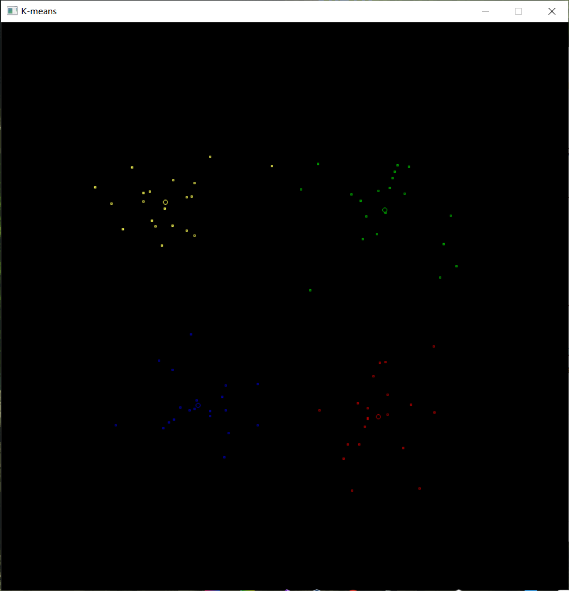
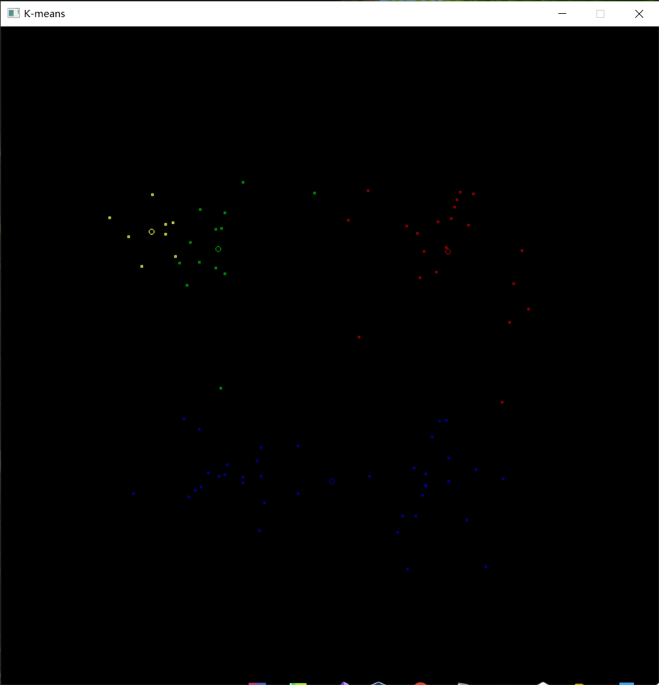

本文将介绍如何使用 K-means 算法对给定的坐标数据进行聚类分析。
使用K-means算法进行聚类分析
问题描述
K-means算法对data中数据进行聚类分析
（1）算法原理描述
（2）算法结构
（3）写出K-means具体功能函数（不能直接调用sklearn.cluster(Means)功能函数)具体函数功能中返回值包括 数据类标签，累中心，输入包括：数据，类别数
（4）可视化画图，不同类数据采用不同颜色
（5）算法分析
类类方差，平均方差，不同初始点对聚类结果的影响？
如何解决？
算法描述
数据结构设计： 数据点使用自定义数据类型point，包含x和y两个变量。 中心点一个大小为k的数组center进行存储，从文本中提取的坐标数据使用可变数组coords进行存储，不同的坐标点分组采用一个可变的二维数组group进行存储。
函数介绍：
extraCoords(): 从文本文件中提取坐标数据并存入coords中，提取算法为：首先使用传入文件路径初始化文件IO流fileStream，再逐个输出fileStream中的数据。若为字母，则不接收。否则两个一组接收，并使用stod()函数接收到的字符串转换成double类型并存入coords中。
drawFigures()：用于将传入坐标数组的数据绘制在屏幕上，由于该函数代码逻辑较为简单且程序段较短，因此设置为内联函数以减少函数调用开销。
clusterAnalysis()：核心算法程序，即Kmeans算法的原理：
首先输入分组k 的值，即通过指定分组数目得到 k 个分组；
从数据集中随机选取 k 个数据点作为初始中心；
对集合中每一数据点，计算与每一个中心点的距离，离哪个中心点距离近，就加入中心点对应的组。
对k个组计算距离的平均值
如果两次求得的均值距离的平均值小于某一个设置的阈值，可以认为我们进行的聚类已经达到期望的结果，算法终止。
如果两次求得的均值距离大于某一个设置的阈值，继续迭代，如果迭代次数大于设定的值，那么终止。
程序运行说明：本程序绘图功能借助了第三方库easyX，如需运行请先前往安装：https://easyx.cn/ 程序运行前将数据文件放置于源程序根目录下，并更名为data.txt.
代码
1
2
3
4
5
6
7
8
9
10
11
12
13
14
15
16
17
18
19
20
21
22
23
24
25
26
27
28
29
30
31
32
33
34
35
36
37
38
39
40
41
42
43
44
45
46
47
48
49
50
51
52
53
54
55
56
57
58
59
60
61
62
63
64
65
66
67
68
69
70
71
72
73
74
75
76
77
78
79
80
81
82
83
84
85
86
87
88
89
90
91
92
93
94
95
96
97
98
99
100
101
102
103
104
105
106
107
108
109
| #include<graphics.h>
#include<iostream>
#include<fstream>
#include<string>
#include<vector>
using namespace std;
class Kmeans {
private:
struct point
{
double x, y;
point(double x = 0, double y = 0) : x(x), y(y) {}
};
const int iterLimit = 100;
const double criDiff = 1e-6;
vector<point> extraCoords(const string& path) {
ifstream fileStream(path);
vector<point> coords;
while (!fileStream.eof()) {
string s;
fileStream >> s;
if (isalpha(s[0]))
continue;
double x = 0, y = 0;
x = stod(s);
fileStream >> s;
y = stod(s);
coords.emplace_back(x, y);
}
fileStream.close();
return coords;
}
inline void drawFigures(const vector<point>& coords) {
for (const auto& coord : coords) {
int x = static_cast<int>(coord.x * 50);
int y = static_cast<int>(coord.y * 50);
rectangle(x - 1, y - 1, x + 1, y + 1);
}
}
public:
void clusterAnalysis(const string& path, int k) {
auto coords = extraCoords(path);
vector<point> center(k);
srand((unsigned int)time(NULL));
for (int i = 0; i < k; ++i) {
int randIndex = rand() % coords.size();
center[i] = coords[randIndex];
}
double difference = DBL_MAX;
vector<vector<point>> group(k);
for (int times = 0; difference / k > criDiff && times < iterLimit; ++times) {
for (auto& g : group) {
g.clear();
}
difference = 0;
for (int i = 0; i < coords.size(); ++i) {
double minDis = DBL_MAX;
int minInd = 0;
for (int j = 0; j < center.size(); ++j) {
double dis = sqrt(pow((center[j].x - coords[i].x), 2)
+ pow((center[j].y - coords[i].y), 2));
if (dis < minDis) {
minDis = dis;
minInd = j;
}
}
group[minInd].emplace_back(coords[i]);
}
for (int i = 0; i < k; ++i) {
double avgX = 0, avgY = 0;
for (int j = 0; j < group[i].size(); ++j) {
avgX += group[i][j].x;
avgY += group[i][j].y;
}
avgX /= group[i].size();
avgY /= group[i].size();
difference += sqrt(pow((center[i].x - avgX), 2)
+ pow((center[i].y - avgY), 2));
center[i] = point(avgX, avgY);
}
cout << "times: " << times << endl;
cout << "central point: " << endl;
for (const auto& c : center) {
cout << c.x << " " << c.y << endl;
}
cout << "---------------------------------" << endl;
}
initgraph(800, 800);
setorigin(400, 400);
vector<int> color = { RED, GREEN, BLUE, YELLOW };
for (int i = 0; i < k; ++i) {
setcolor(color[i % color.size()]);
circle(center[i].x * 50, center[i].y * 50, 3);
drawFigures(group[i]);
}
cin.get();
closegraph();
}
};
int main() {
Kmeans kmeans;
kmeans.clusterAnalysis("./data.txt", 4);
}
|
实验结果分析

| 迭代次数 |
中心点1 |
中心点2 |
中心点3 |
中心点4 |
| 1 |
(0.227226, 3.04983) |
(2.78284, -2.05254) |
(-3.52982, 3.21916) |
(-3.53974, -2.89384) |
| 2 |
(1.88871, 3.14692) |
(2.86928, -2.54779) |
(-2.77105, 2.77596) |
(-3.38237, -2.94734) |
| 3 |
(2.62653, 3.10868) |
(2.80293, -2.73151) |
(-2.46154, 2.78738) |
(-3.38237, -2.94734) |
| 4 |
(2.62653, 3.10868) |
(2.80293, -2.73151) |
(-2.46154, 2.78738) |
(-3.38237, -2.94734) |
运行结果如图所示，输入的 k 为4，将各点分成了4类，每一类用不同的颜色进行表示，类的中心点为该颜色下的小圆圈。根据肉眼观察，聚类的结果较为合理。但是由于 K-means 算法初始点的选取是随机的，因此可能会导致聚类的结果不尽相同，如下图所示：

| 迭代次数 |
中心点1 |
中心点2 |
中心点3 |
中心点4 |
| 1 |
(2.72345, -2.26244) |
(-3.01524, -2.54552) |
(-0.17289, 3.07096) |
(-4.01179, -3.20733) |
| 2 |
(2.86928, -2.54779) |
(-2.77631, -2.51946) |
(0.0469085, 3.05288) |
(-4.27929, -3.17607) |
| 3 |
(2.86928, -2.54779) |
(-2.73086, -2.60718) |
(0.0469085, 3.05288) |
(-4.35316, -3.03354) |
| 4 |
(2.86928, -2.54779) |
(-2.73086, -2.60718) |
(0.0469085, 3.05288) |
(-4.35316, -3.03354) |
可见，由于初始中心点的选取不同，最终导致聚类的结果产生了差异，且本次聚类的结果相对来说不够合理。
实验体会
本次实验算法原理并不复杂，关键在于对文本数据的提取与转换，以及将数据可视化的绘制在屏幕上。文本数据提取部分我采用了文件IO流与字符串转换函数stod()。而数据可视化方面，由于本实验只有其画点这一极为基础的图形需求，因此我采用了一个较为轻量化图形库easyX，使用简单且代码量很少。

 微信
微信 支付宝
支付宝